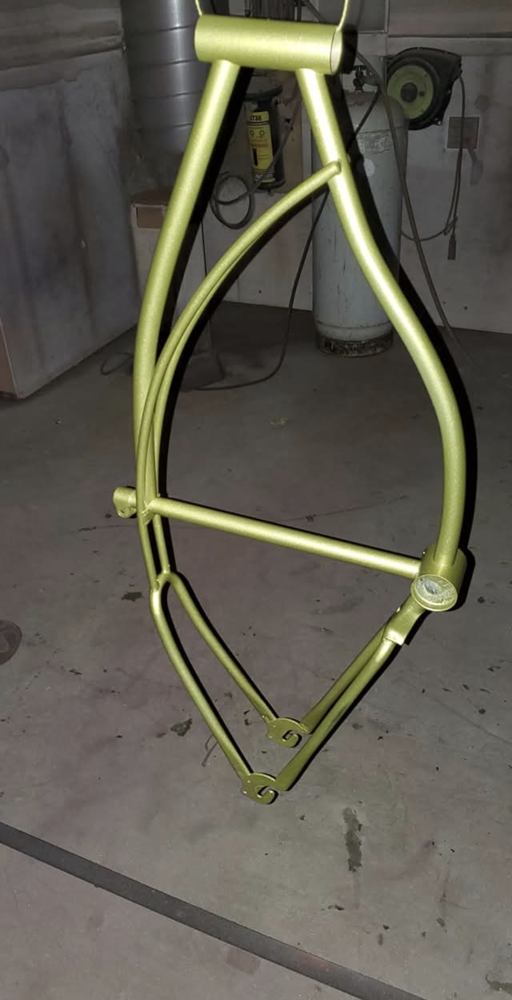

Inside The Booth
At Pedal Forever, preserving original paint will always come first. A bike only leaves the factory one time wearing its original finish, and once that history disappears, it can never truly be recreated.
Not every bike survives untouched. Some arrive already stripped. Some were repainted decades ago. Some have rust too deep to ignore. Some simply deserve another chance. That’s where The Booth comes in.
Every frame gets evaluated individually. Every dent gets assessed. Every ding gets considered before anything happens. Nothing gets blindly buried under filler and shiny paint just for the sake of appearance. The goal has never been perfection. The goal is respect.
This room is where the decisions happen. Color matching. Masking lines. Primer stages. Metal preparation. Clear coat flow. Funkadelic colorways. Factory-inspired restorations. Survivor touch-ups. Sometimes restraint matters more than repainting the entire bike. Sometimes saving what remains is the real art form.
The Booth is equal parts restoration lab, archive room, and bad decision factory. This is where Pedal Forever bikes either stay alive... or come back to life.


Fresh Out Of The Booth
Metallic flake never looks the same twice. Under fluorescent lights it shifts. Outside in the sun it changes again. This short clip captures one of those moments immediately after cure — when the paint finally starts talking back.